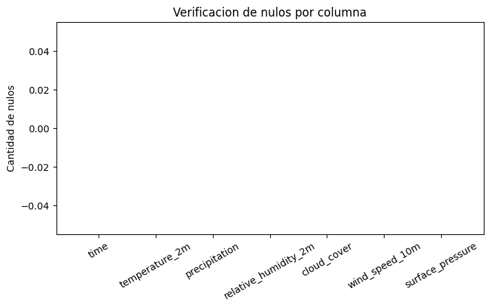
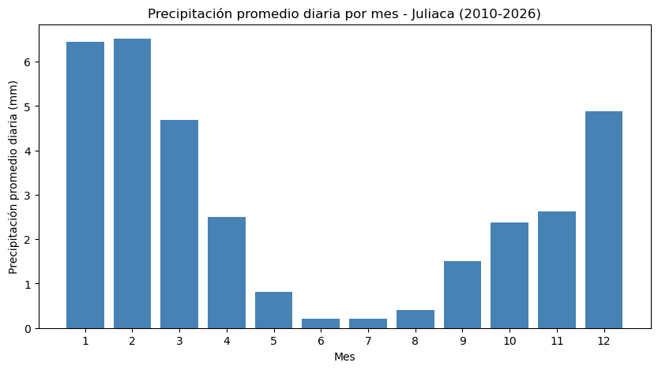
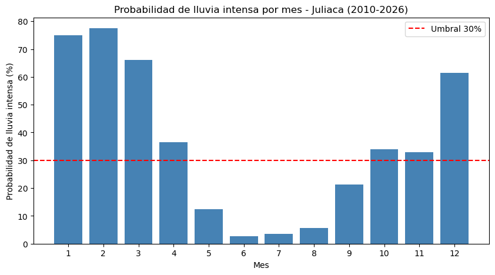
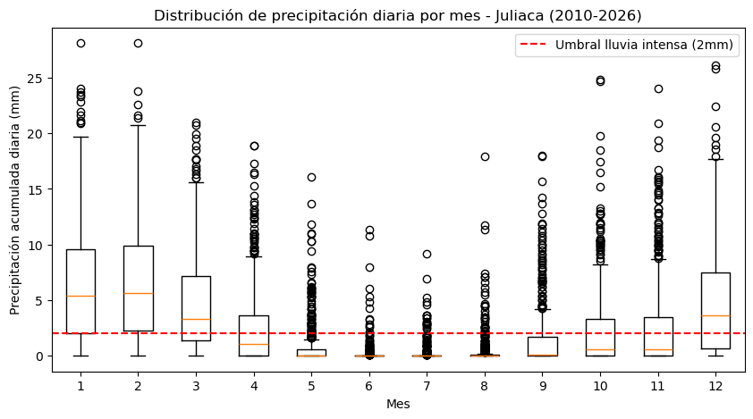
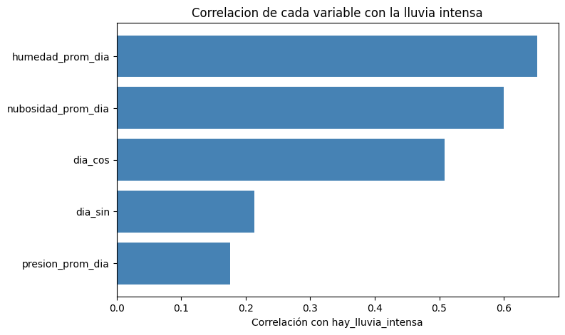
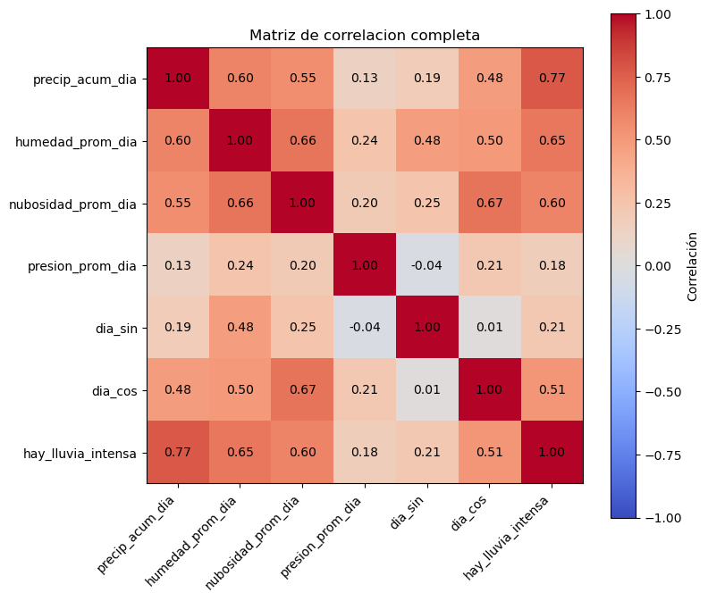
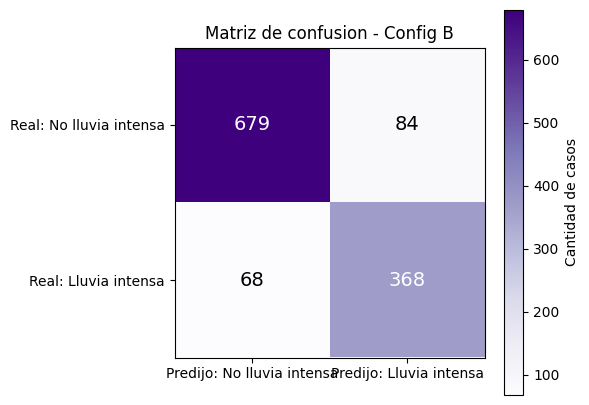
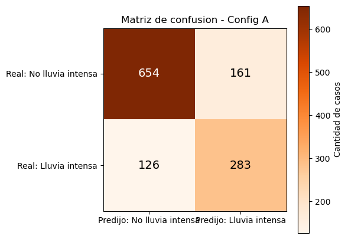

U1 - Heladas y Lluvia: Monitoreo y anticipación de riesgo climático en Juliaca#
Equipo: BIG IMPACT · Integrante: Efrain Nayder Arce Mayta Dimensión: Precipitación — predictiva, batch (U1)
1.1 Crear el notebook y la SparkSession#
from pyspark.sql import SparkSession
spark = (
SparkSession.builder
.appName("bigdata-u1-precipitacion")
.master("local[*]")
.config("spark.ui.port", "4040")
.config("spark.sql.shuffle.partitions", "8")
.config("spark.driver.memory", "4g")
.getOrCreate()
)
spark
<div>
<p><b>SparkSession - in-memory</b></p>
</div>
1.2 Definir el esquema y cargar los datos#
from pyspark.sql.types import StructType, StructField, TimestampType, DoubleType
ORIGEN_DATOS = "data"
schema_clima = StructType([
StructField("time", TimestampType(), nullable=False),
StructField("temperature_2m", DoubleType(), nullable=True),
StructField("precipitation", DoubleType(), nullable=True),
StructField("relative_humidity_2m", DoubleType(), nullable=True),
StructField("cloud_cover", DoubleType(), nullable=True),
StructField("wind_speed_10m", DoubleType(), nullable=True),
StructField("surface_pressure", DoubleType(), nullable=True),
])
df = (
spark.read
.option("timestampFormat", "yyyy-MM-dd'T'HH:mm")
.csv(f"{ORIGEN_DATOS}/clima_juliaca_horario.csv", header=True, schema=schema_clima)
)
df.printSchema()
df.show(5)
print(f"Total filas: {df.count():,}")
root
|-- time: timestamp (nullable = true)
|-- temperature_2m: double (nullable = true)
|-- precipitation: double (nullable = true)
|-- relative_humidity_2m: double (nullable = true)
|-- cloud_cover: double (nullable = true)
|-- wind_speed_10m: double (nullable = true)
|-- surface_pressure: double (nullable = true)
+-------------------+--------------+-------------+--------------------+-----------+--------------+----------------+
| time|temperature_2m|precipitation|relative_humidity_2m|cloud_cover|wind_speed_10m|surface_pressure|
+-------------------+--------------+-------------+--------------------+-----------+--------------+----------------+
|2010-01-01 00:00:00| 6.8| 0.0| 84.0| 93.0| 4.9| 645.3|
|2010-01-01 01:00:00| 5.5| 0.0| 91.0| 89.0| 6.2| 643.7|
|2010-01-01 02:00:00| 5.5| 0.0| 83.0| 91.0| 6.6| 643.4|
|2010-01-01 03:00:00| 5.1| 0.0| 83.0| 96.0| 6.2| 643.1|
|2010-01-01 04:00:00| 4.9| 0.0| 83.0| 85.0| 5.9| 643.2|
+-------------------+--------------+-------------+--------------------+-----------+--------------+----------------+
only showing top 5 rows
Total filas: 146,280
from pyspark.sql.types import StructType, StructField, TimestampType, DoubleType
ORIGEN_DATOS = "data"
schema_clima = StructType([
StructField("time", TimestampType(), nullable=False),
StructField("temperature_2m", DoubleType(), nullable=True),
StructField("precipitation", DoubleType(), nullable=True),
StructField("relative_humidity_2m", DoubleType(), nullable=True),
StructField("cloud_cover", DoubleType(), nullable=True),
StructField("wind_speed_10m", DoubleType(), nullable=True),
StructField("surface_pressure", DoubleType(), nullable=True),
])
df = (
spark.read
.option("timestampFormat", "yyyy-MM-dd'T'HH:mm")
.csv(f"{ORIGEN_DATOS}/clima_juliaca_horario.csv", header=True, schema=schema_clima)
)
df.printSchema()
df.show(5)
print(f"Total filas: {df.count():,}")
root
|-- time: timestamp (nullable = true)
|-- temperature_2m: double (nullable = true)
|-- precipitation: double (nullable = true)
|-- relative_humidity_2m: double (nullable = true)
|-- cloud_cover: double (nullable = true)
|-- wind_speed_10m: double (nullable = true)
|-- surface_pressure: double (nullable = true)
+-------------------+--------------+-------------+--------------------+-----------+--------------+----------------+
| time|temperature_2m|precipitation|relative_humidity_2m|cloud_cover|wind_speed_10m|surface_pressure|
+-------------------+--------------+-------------+--------------------+-----------+--------------+----------------+
|2010-01-01 00:00:00| 6.8| 0.0| 84.0| 93.0| 4.9| 645.3|
|2010-01-01 01:00:00| 5.5| 0.0| 91.0| 89.0| 6.2| 643.7|
|2010-01-01 02:00:00| 5.5| 0.0| 83.0| 91.0| 6.6| 643.4|
|2010-01-01 03:00:00| 5.1| 0.0| 83.0| 96.0| 6.2| 643.1|
|2010-01-01 04:00:00| 4.9| 0.0| 83.0| 85.0| 5.9| 643.2|
+-------------------+--------------+-------------+--------------------+-----------+--------------+----------------+
only showing top 5 rows
Total filas: 146,280
1.3 Verificar nulos en todas las columnas#
from pyspark.sql.functions import col, count as spark_count, when
df.select([
spark_count(when(col(c).isNull(), c)).alias(c) for c in df.columns
]).show(vertical=True, truncate=False)
-RECORD 0-------------------
time | 0
temperature_2m | 0
precipitation | 0
relative_humidity_2m | 0
cloud_cover | 0
wind_speed_10m | 0
surface_pressure | 0
1.4 Gráfico de verificación de nulos#
nulos_dict = {c: df.filter(col(c).isNull()).count() for c in df.columns}
plt.figure(figsize=(8, 4))
plt.bar(nulos_dict.keys(), nulos_dict.values(), color="firebrick")
plt.ylabel("Cantidad de nulos")
plt.title("Verificacion de nulos por columna")
plt.xticks(rotation=30)
plt.show()

1.5 Agregar a valores diarios#
from pyspark.sql.functions import to_date, sum as spark_sum, avg
df_diario = (
df
.withColumn("fecha", to_date(col("time")))
.groupBy("fecha")
.agg(
spark_sum("precipitation").alias("precip_acum_dia"),
avg("relative_humidity_2m").alias("humedad_prom_dia"),
avg("cloud_cover").alias("nubosidad_prom_dia"),
avg("surface_pressure").alias("presion_prom_dia"),
)
)
df_diario.orderBy("fecha").show(5)
print(f"Total dias: {df_diario.count():,}")
+----------+------------------+-----------------+------------------+-----------------+
| fecha| precip_acum_dia| humedad_prom_dia|nubosidad_prom_dia| presion_prom_dia|
+----------+------------------+-----------------+------------------+-----------------+
|2010-01-01|2.5999999999999996|65.29166666666667| 83.95833333333333|645.9083333333333|
|2010-01-02| 6.7|75.54166666666667| 83.45833333333333| 645.525|
|2010-01-03| 6.0|73.79166666666667| 99.25|646.1166666666667|
|2010-01-04| 10.1|79.33333333333333| 99.25|646.1625000000001|
|2010-01-05| 3.7|77.79166666666667| 90.125| 647.1|
+----------+------------------+-----------------+------------------+-----------------+
only showing top 5 rows
Total dias: 6,095
1.5.1 Procesamiento con RDD (evidencia de bajo nivel)#
from pyspark.sql.functions import when
UMBRAL_LLUVIA = 2.0
df_diario = df_diario.withColumn(
"hay_lluvia_intensa",
when(col("precip_acum_dia") > UMBRAL_LLUVIA, 1.0).otherwise(0.0)
)
conteo_rdd = df_diario.rdd.filter(lambda fila: fila["hay_lluvia_intensa"] == 1.0).count()
print(f"Dias con lluvia intensa (via RDD): {conteo_rdd:,}")
Dias con lluvia intensa (via RDD): 2,164
1.6 Resumen mensual y gráfico de tendencia#
from pyspark.sql.functions import month
import matplotlib.pyplot as plt
resumen_mensual = (
df_diario
.withColumn("mes", month(col("fecha")))
.groupBy("mes")
.agg(avg("precip_acum_dia").alias("precip_prom_dia"))
.orderBy("mes")
.toPandas()
)
plt.figure(figsize=(10, 5))
plt.bar(resumen_mensual["mes"], resumen_mensual["precip_prom_dia"], color="steelblue")
plt.xlabel("Mes")
plt.ylabel("Precipitación promedio diaria (mm)")
plt.title("Precipitación promedio diaria por mes - Juliaca (2010-2026)")
plt.xticks(range(1, 13))
plt.show()

1.7 Marcar lluvia intensa y codificar el día del año (cíclico)#
from pyspark.sql.functions import when, dayofyear, sin, cos
import math
UMBRAL_LLUVIA = 2.0
df_diario = (
df_diario
.withColumn("hay_lluvia_intensa", when(col("precip_acum_dia") > UMBRAL_LLUVIA, 1.0).otherwise(0.0))
.withColumn("dia_anio", dayofyear(col("fecha")))
.withColumn("dia_sin", sin(col("dia_anio") * (2 * math.pi / 365)))
.withColumn("dia_cos", cos(col("dia_anio") * (2 * math.pi / 365)))
)
df_diario.select("fecha", "precip_acum_dia", "hay_lluvia_intensa", "dia_anio", "dia_sin", "dia_cos").show(5)
+----------+------------------+------------------+--------+------------------+------------------+
| fecha| precip_acum_dia|hay_lluvia_intensa|dia_anio| dia_sin| dia_cos|
+----------+------------------+------------------+--------+------------------+------------------+
|2010-01-15|13.999999999999995| 1.0| 15| 0.255353295116187|0.9668478136052775|
|2010-01-16| 6.700000000000001| 1.0| 16|0.2719581575341055|0.9623090774541486|
|2010-01-30|1.4000000000000001| 0.0| 30|0.4937755501599772| 0.869589389346611|
|2010-01-31| 3.5| 1.0| 31|0.5086709438521044|0.8609610158889943|
|2010-02-11| 0.0| 0.0| 42|0.6616346182422783|0.7498264012045686|
+----------+------------------+------------------+--------+------------------+------------------+
only showing top 5 rows
1.8 Evidencia del plan de ejecución (lazy evaluation)#
df_diario.explain(True)
== Parsed Logical Plan ==
'Project [unresolvedstarwithcolumns(dia_cos, 'cos('`*`('dia_anio, 0.01721420632103996)), None)]
+- Project [fecha#112, precip_acum_dia#113, humedad_prom_dia#114, nubosidad_prom_dia#115, presion_prom_dia#116, hay_lluvia_intensa#217, dia_anio#218, SIN((cast(dia_anio#218 as double) * 0.01721420632103996)) AS dia_sin#219]
+- Project [fecha#112, precip_acum_dia#113, humedad_prom_dia#114, nubosidad_prom_dia#115, presion_prom_dia#116, hay_lluvia_intensa#217, dayofyear(fecha#112) AS dia_anio#218]
+- Project [fecha#112, precip_acum_dia#113, humedad_prom_dia#114, nubosidad_prom_dia#115, presion_prom_dia#116, CASE WHEN (precip_acum_dia#113 > 2.0) THEN 1.0 ELSE 0.0 END AS hay_lluvia_intensa#217]
+- Aggregate [fecha#112], [fecha#112, sum(precipitation#2) AS precip_acum_dia#113, avg(relative_humidity_2m#3) AS humedad_prom_dia#114, avg(cloud_cover#4) AS nubosidad_prom_dia#115, avg(surface_pressure#6) AS presion_prom_dia#116]
+- Project [time#0, temperature_2m#1, precipitation#2, relative_humidity_2m#3, cloud_cover#4, wind_speed_10m#5, surface_pressure#6, to_date(time#0, None, Some(Etc/UTC), true) AS fecha#112]
+- Relation [time#0,temperature_2m#1,precipitation#2,relative_humidity_2m#3,cloud_cover#4,wind_speed_10m#5,surface_pressure#6] csv
== Analyzed Logical Plan ==
fecha: date, precip_acum_dia: double, humedad_prom_dia: double, nubosidad_prom_dia: double, presion_prom_dia: double, hay_lluvia_intensa: double, dia_anio: int, dia_sin: double, dia_cos: double
Project [fecha#112, precip_acum_dia#113, humedad_prom_dia#114, nubosidad_prom_dia#115, presion_prom_dia#116, hay_lluvia_intensa#217, dia_anio#218, dia_sin#219, COS((cast(dia_anio#218 as double) * 0.01721420632103996)) AS dia_cos#220]
+- Project [fecha#112, precip_acum_dia#113, humedad_prom_dia#114, nubosidad_prom_dia#115, presion_prom_dia#116, hay_lluvia_intensa#217, dia_anio#218, SIN((cast(dia_anio#218 as double) * 0.01721420632103996)) AS dia_sin#219]
+- Project [fecha#112, precip_acum_dia#113, humedad_prom_dia#114, nubosidad_prom_dia#115, presion_prom_dia#116, hay_lluvia_intensa#217, dayofyear(fecha#112) AS dia_anio#218]
+- Project [fecha#112, precip_acum_dia#113, humedad_prom_dia#114, nubosidad_prom_dia#115, presion_prom_dia#116, CASE WHEN (precip_acum_dia#113 > 2.0) THEN 1.0 ELSE 0.0 END AS hay_lluvia_intensa#217]
+- Aggregate [fecha#112], [fecha#112, sum(precipitation#2) AS precip_acum_dia#113, avg(relative_humidity_2m#3) AS humedad_prom_dia#114, avg(cloud_cover#4) AS nubosidad_prom_dia#115, avg(surface_pressure#6) AS presion_prom_dia#116]
+- Project [time#0, temperature_2m#1, precipitation#2, relative_humidity_2m#3, cloud_cover#4, wind_speed_10m#5, surface_pressure#6, to_date(time#0, None, Some(Etc/UTC), true) AS fecha#112]
+- Relation [time#0,temperature_2m#1,precipitation#2,relative_humidity_2m#3,cloud_cover#4,wind_speed_10m#5,surface_pressure#6] csv
== Optimized Logical Plan ==
Project [fecha#112, precip_acum_dia#113, humedad_prom_dia#114, nubosidad_prom_dia#115, presion_prom_dia#116, hay_lluvia_intensa#217, dia_anio#218, SIN((cast(dia_anio#218 as double) * 0.01721420632103996)) AS dia_sin#219, COS((cast(dia_anio#218 as double) * 0.01721420632103996)) AS dia_cos#220]
+- Project [fecha#112, precip_acum_dia#113, humedad_prom_dia#114, nubosidad_prom_dia#115, presion_prom_dia#116, CASE WHEN (precip_acum_dia#113 > 2.0) THEN 1.0 ELSE 0.0 END AS hay_lluvia_intensa#217, dayofyear(fecha#112) AS dia_anio#218]
+- Aggregate [fecha#112], [fecha#112, sum(precipitation#2) AS precip_acum_dia#113, avg(relative_humidity_2m#3) AS humedad_prom_dia#114, avg(cloud_cover#4) AS nubosidad_prom_dia#115, avg(surface_pressure#6) AS presion_prom_dia#116]
+- Project [precipitation#2, relative_humidity_2m#3, cloud_cover#4, surface_pressure#6, cast(time#0 as date) AS fecha#112]
+- Relation [time#0,temperature_2m#1,precipitation#2,relative_humidity_2m#3,cloud_cover#4,wind_speed_10m#5,surface_pressure#6] csv
== Physical Plan ==
AdaptiveSparkPlan isFinalPlan=false
+- Project [fecha#112, precip_acum_dia#113, humedad_prom_dia#114, nubosidad_prom_dia#115, presion_prom_dia#116, hay_lluvia_intensa#217, dia_anio#218, SIN((cast(dia_anio#218 as double) * 0.01721420632103996)) AS dia_sin#219, COS((cast(dia_anio#218 as double) * 0.01721420632103996)) AS dia_cos#220]
+- Project [fecha#112, precip_acum_dia#113, humedad_prom_dia#114, nubosidad_prom_dia#115, presion_prom_dia#116, CASE WHEN (precip_acum_dia#113 > 2.0) THEN 1.0 ELSE 0.0 END AS hay_lluvia_intensa#217, dayofyear(fecha#112) AS dia_anio#218]
+- HashAggregate(keys=[fecha#112], functions=[sum(precipitation#2), avg(relative_humidity_2m#3), avg(cloud_cover#4), avg(surface_pressure#6)], output=[fecha#112, precip_acum_dia#113, humedad_prom_dia#114, nubosidad_prom_dia#115, presion_prom_dia#116])
+- Exchange hashpartitioning(fecha#112, 8), ENSURE_REQUIREMENTS, [plan_id=470]
+- HashAggregate(keys=[fecha#112], functions=[partial_sum(precipitation#2), partial_avg(relative_humidity_2m#3), partial_avg(cloud_cover#4), partial_avg(surface_pressure#6)], output=[fecha#112, sum#141, sum#142, count#143L, sum#144, count#145L, sum#146, count#147L])
+- Project [precipitation#2, relative_humidity_2m#3, cloud_cover#4, surface_pressure#6, cast(time#0 as date) AS fecha#112]
+- FileScan csv [time#0,precipitation#2,relative_humidity_2m#3,cloud_cover#4,surface_pressure#6] Batched: false, DataFilters: [], Format: CSV, Location: InMemoryFileIndex(1 paths)[file:/opt/bigdata-u1/data/clima_juliaca_horario.csv], PartitionFilters: [], PushedFilters: [], ReadSchema: struct<time:timestamp,precipitation:double,relative_humidity_2m:double,cloud_cover:double,surface...
1.9 Verificar duplicados#
total = df_diario.count()
sin_duplicar = df_diario.dropDuplicates(["fecha"]).count()
print(f"Total: {total:,}, sin duplicar por fecha: {sin_duplicar:,}")
assert total == sin_duplicar, "Hay fechas duplicadas en la agregacion diaria"
Total: 6,095, sin duplicar por fecha: 6,095
1.10 Escribir salida Gold en Parquet, particionada por año#
from pyspark.sql.functions import year
RUTA_GOLD = "artifacts/precipitacion_gold"
df_diario_particionable = df_diario.withColumn("anio", year(col("fecha")))
(
df_diario_particionable
.repartition(4)
.write.format("parquet")
.mode("overwrite")
.partitionBy("anio")
.save(RUTA_GOLD)
)
import os
print("Carpetas de particion creadas:")
for carpeta in sorted(os.listdir(RUTA_GOLD)):
print(" -", carpeta)
Carpetas de particion creadas:
- ._SUCCESS.crc
- _SUCCESS
- anio=2010
- anio=2011
- anio=2012
- anio=2013
- anio=2014
- anio=2015
- anio=2016
- anio=2017
- anio=2018
- anio=2019
- anio=2020
- anio=2021
- anio=2022
- anio=2023
- anio=2024
- anio=2025
- anio=2026
1.11 Verificar lectura de vuelta y PartitionFilters#
df_gold = spark.read.parquet(RUTA_GOLD)
total_original = df_diario_particionable.count()
total_leido = df_gold.count()
print(f"Filas escritas: {total_original:,}, filas leidas de vuelta: {total_leido:,}")
assert total_original == total_leido, "Se perdieron filas al escribir/leer el Parquet"
df_gold.filter(col("anio") == 2022).explain()
Filas escritas: 6,095, filas leidas de vuelta: 6,095
== Physical Plan ==
*(1) ColumnarToRow
+- FileScan parquet [fecha#775,precip_acum_dia#776,humedad_prom_dia#777,nubosidad_prom_dia#778,presion_prom_dia#779,hay_lluvia_intensa#780,dia_anio#781,dia_sin#782,dia_cos#783,anio#784] Batched: true, DataFilters: [], Format: Parquet, Location: InMemoryFileIndex(1 paths)[file:/home/jovyan/u1/artifacts/precipitacion_gold], PartitionFilters: [isnotnull(anio#784), (anio#784 = 2022)], PushedFilters: [], ReadSchema: struct<fecha:date,precip_acum_dia:double,humedad_prom_dia:double,nubosidad_prom_dia:double,presio...
1.12 Resumen mensual (probabilidad de lluvia intensa) y gráfico de tendencia#
resumen_mensual = (
df_diario
.withColumn("mes", month(col("fecha")))
.groupBy("mes")
.agg(avg("hay_lluvia_intensa").alias("prob_lluvia"))
.orderBy("mes")
.toPandas()
)
plt.figure(figsize=(10, 5))
plt.bar(resumen_mensual["mes"], resumen_mensual["prob_lluvia"] * 100, color="steelblue")
plt.axhline(y=30, color="red", linestyle="--", label="Umbral 30%")
plt.xlabel("Mes")
plt.ylabel("Probabilidad de lluvia intensa (%)")
plt.title("Probabilidad de lluvia intensa por mes - Juliaca (2010-2026)")
plt.xticks(range(1, 13))
plt.legend()
plt.show()

1.13 Distribución de precipitación diaria por mes (boxplot)#
datos_boxplot = (
df_diario
.withColumn("mes", month(col("fecha")))
.select("mes", "precip_acum_dia")
.toPandas()
)
grupos = [datos_boxplot[datos_boxplot["mes"] == m]["precip_acum_dia"].values for m in range(1, 13)]
plt.figure(figsize=(10, 5))
plt.boxplot(grupos, labels=range(1, 13))
plt.axhline(y=2, color="red", linestyle="--", label="Umbral lluvia intensa (2mm)")
plt.xlabel("Mes")
plt.ylabel("Precipitación acumulada diaria (mm)")
plt.title("Distribución de precipitación diaria por mes - Juliaca (2010-2026)")
plt.legend()
plt.show()

1.14 Correlación de cada variable con la lluvia intensa#
import pandas as pd
predictores_candidatos = ["dia_sin", "dia_cos", "humedad_prom_dia", "nubosidad_prom_dia", "presion_prom_dia"]
correlaciones = {
p: df_diario.stat.corr(p, "hay_lluvia_intensa")
for p in predictores_candidatos
}
df_corr = pd.DataFrame(list(correlaciones.items()), columns=["variable", "correlacion"]).sort_values("correlacion")
plt.figure(figsize=(8, 5))
plt.barh(df_corr["variable"], df_corr["correlacion"], color="steelblue")
plt.axvline(x=0, color="black", linewidth=0.8)
plt.xlabel("Correlación con hay_lluvia_intensa")
plt.title("Correlacion de cada variable con la lluvia intensa")
plt.show()

1.15 Matriz de correlación completa#
import numpy as np
variables_matriz = ["precip_acum_dia", "humedad_prom_dia", "nubosidad_prom_dia", "presion_prom_dia", "dia_sin", "dia_cos", "hay_lluvia_intensa"]
matriz = np.zeros((len(variables_matriz), len(variables_matriz)))
for i, v1 in enumerate(variables_matriz):
for j, v2 in enumerate(variables_matriz):
matriz[i, j] = df_diario.stat.corr(v1, v2)
plt.figure(figsize=(8, 7))
plt.imshow(matriz, cmap="coolwarm", vmin=-1, vmax=1)
plt.colorbar(label="Correlación")
plt.xticks(range(len(variables_matriz)), variables_matriz, rotation=45, ha="right")
plt.yticks(range(len(variables_matriz)), variables_matriz)
for i in range(len(variables_matriz)):
for j in range(len(variables_matriz)):
plt.text(j, i, f"{matriz[i, j]:.2f}", ha="center", va="center", color="black")
plt.title("Matriz de correlacion completa")
plt.tight_layout()
plt.show()

1.16 Vectores de predictores (dos configuraciones) y división train/test#
from pyspark.ml.feature import VectorAssembler
assembler_simple = VectorAssembler(
inputCols=["dia_sin", "dia_cos"],
outputCol="features_simple"
)
assembler_enriquecido = VectorAssembler(
inputCols=["dia_sin", "dia_cos", "humedad_prom_dia", "nubosidad_prom_dia", "presion_prom_dia"],
outputCol="features_enriquecido"
)
df_features = assembler_simple.transform(df_gold)
df_features = assembler_enriquecido.transform(df_features)
df_train, df_test = df_features.randomSplit([0.8, 0.2], seed=42)
print(f"Filas train: {df_train.count():,}")
print(f"Filas test: {df_test.count():,}")
Filas train: 4,871
Filas test: 1,224
1.17 Entrenar y evaluar Config A (solo estacionalidad)#
from pyspark.ml.classification import LogisticRegression
from pyspark.ml.evaluation import BinaryClassificationEvaluator, MulticlassClassificationEvaluator
log_simple = LogisticRegression(featuresCol="features_simple", labelCol="hay_lluvia_intensa")
modelo_log_simple = log_simple.fit(df_train)
predicciones_log_simple = modelo_log_simple.transform(df_test)
evaluador_auc = BinaryClassificationEvaluator(labelCol="hay_lluvia_intensa", metricName="areaUnderROC")
evaluador_f1 = MulticlassClassificationEvaluator(labelCol="hay_lluvia_intensa", predictionCol="prediction", metricName="f1")
auc_simple = evaluador_auc.evaluate(predicciones_log_simple)
f1_simple = evaluador_f1.evaluate(predicciones_log_simple)
print(f"Config A (solo dia del anio) -> AUC: {auc_simple:.4f}, F1: {f1_simple:.4f}")
Config A (solo dia del anio) -> AUC: 0.8305, F1: 0.7678
1.18 Entrenar y evaluar Config B (estacionalidad + contexto meteorológico)#
log_enriquecido = LogisticRegression(featuresCol="features_enriquecido", labelCol="hay_lluvia_intensa")
modelo_log_enriquecido = log_enriquecido.fit(df_train)
predicciones_log_enriquecido = modelo_log_enriquecido.transform(df_test)
auc_enriquecido = evaluador_auc.evaluate(predicciones_log_enriquecido)
f1_enriquecido = evaluador_f1.evaluate(predicciones_log_enriquecido)
print(f"Config B (dia + humedad + nubosidad + presion) -> AUC: {auc_enriquecido:.4f}, F1: {f1_enriquecido:.4f}")
Config B (dia + humedad + nubosidad + presion) -> AUC: 0.9425, F1: 0.8737
1.18.1 Métricas adicionales: precisión y exhaustividad#
log_enriquecido = LogisticRegression(featuresCol="features_enriquecido", labelCol="hay_lluvia_intensa")
modelo_log_enriquecido = log_enriquecido.fit(df_train)
predicciones_log_enriquecido = modelo_log_enriquecido.transform(df_test)
auc_enriquecido = evaluador_auc.evaluate(predicciones_log_enriquecido)
f1_enriquecido = evaluador_f1.evaluate(predicciones_log_enriquecido)
print(f"Config B (dia + humedad + nubosidad + presion) -> AUC: {auc_enriquecido:.4f}, F1: {f1_enriquecido:.4f}")
Config B (dia + humedad + nubosidad + presion) -> AUC: 0.9411, F1: 0.8680
1.19 Matriz de confusión - Config B#
conf_matrix = (
predicciones_log_enriquecido
.groupBy("hay_lluvia_intensa", "prediction")
.count()
.toPandas()
)
tabla = conf_matrix.pivot(index="hay_lluvia_intensa", columns="prediction", values="count").fillna(0)
plt.figure(figsize=(5, 5))
plt.imshow(tabla.values, cmap="Purples")
plt.colorbar(label="Cantidad de casos")
plt.xticks([0, 1], ["Predijo: No lluvia intensa", "Predijo: Lluvia intensa"])
plt.yticks([0, 1], ["Real: No lluvia intensa", "Real: Lluvia intensa"])
maximo = tabla.values.max()
for i in range(tabla.shape[0]):
for j in range(tabla.shape[1]):
valor = tabla.values[i, j]
color_texto = "white" if valor > maximo * 0.5 else "black"
plt.text(j, i, int(valor), ha="center", va="center", color=color_texto, fontsize=14)
plt.title("Matriz de confusion - Config B")
plt.show()

1.20 Matriz de confusión - Config A#
conf_matrix_a = (
predicciones_log_simple
.groupBy("hay_lluvia_intensa", "prediction")
.count()
.toPandas()
)
tabla_a = conf_matrix_a.pivot(index="hay_lluvia_intensa", columns="prediction", values="count").fillna(0)
plt.figure(figsize=(5, 5))
plt.imshow(tabla_a.values, cmap="Oranges")
plt.colorbar(label="Cantidad de casos")
plt.xticks([0, 1], ["Predijo: No lluvia intensa", "Predijo: Lluvia intensa"])
plt.yticks([0, 1], ["Real: No lluvia intensa", "Real: Lluvia intensa"])
maximo = tabla_a.values.max()
for i in range(tabla_a.shape[0]):
for j in range(tabla_a.shape[1]):
valor = tabla_a.values[i, j]
color_texto = "white" if valor > maximo * 0.5 else "black"
plt.text(j, i, int(valor), ha="center", va="center", color=color_texto, fontsize=14)
plt.title("Matriz de confusion - Config A")
plt.show()

1.21 Guardar el modelo ganador#
RUTA_MODELO = "artifacts/modelo_precipitacion_config_b"
modelo_log_enriquecido.write().overwrite().save(RUTA_MODELO)
print(f"Modelo guardado en: {RUTA_MODELO}")
Modelo guardado en: artifacts/modelo_precipitacion_config_b